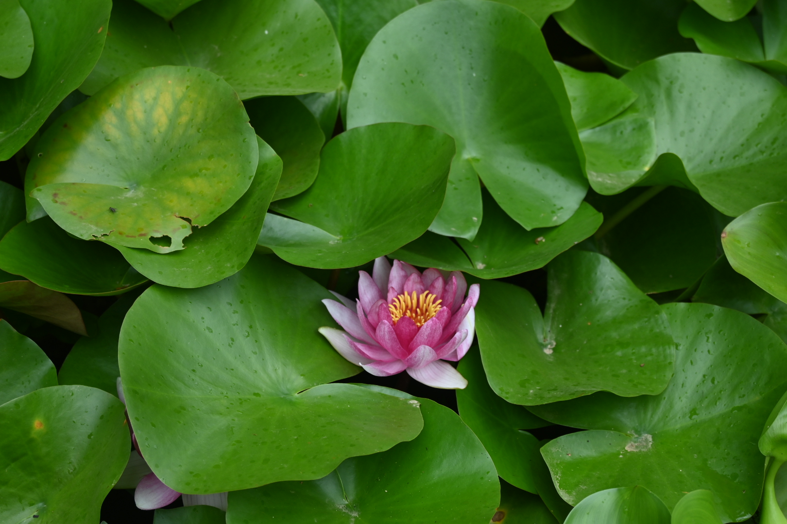
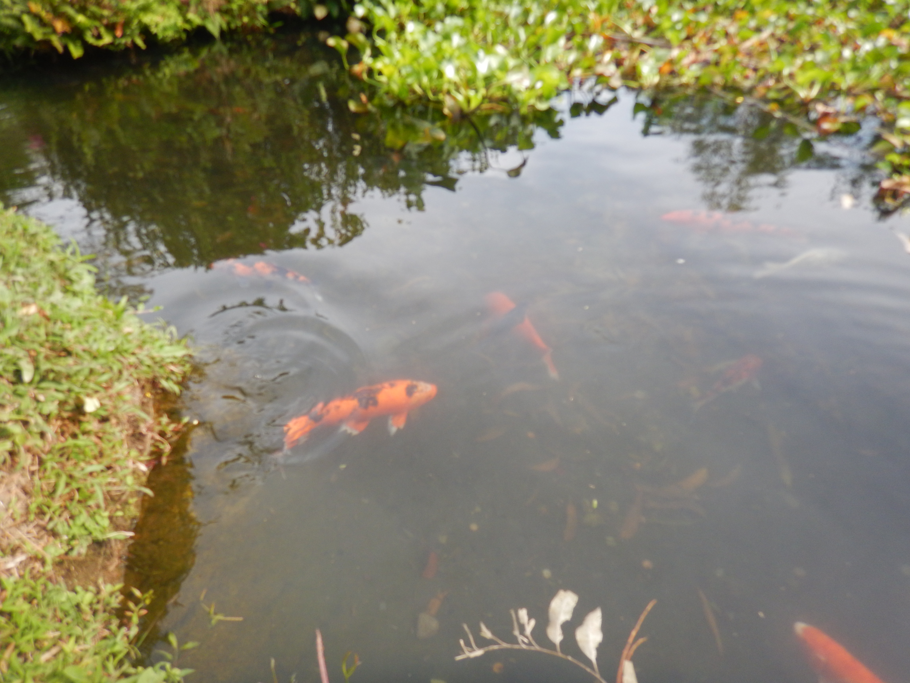
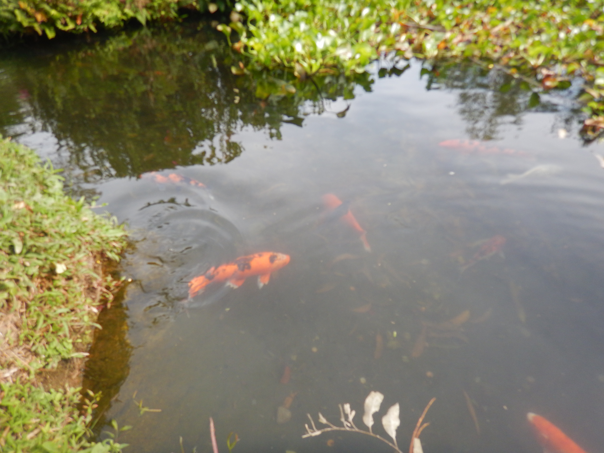

Fish and Flowers
Koi fish symbolize perseverance and good luck. Their unique patterns and friendly nature are quite endearing, and over the past few years, I've photographed them when traveling. Water lilies, which often accompany my sightings of koi, remind me of Monet's paintings. One of my life goals is to create a koi pond with water lilies in my backyard, a beautiful and peaceful space. For now, here's my virtual pond with some fish and flowers from Barcelona, Panama City, Giverny, Pasadena, and Washington, D.C. :)
 
